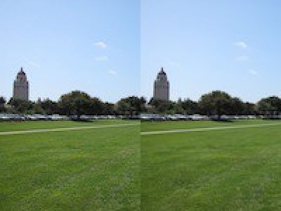
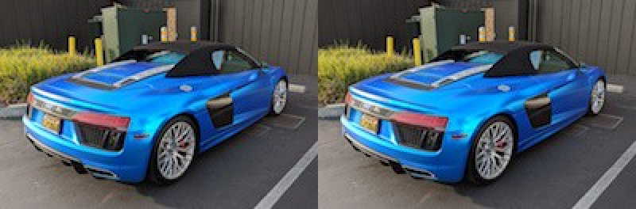
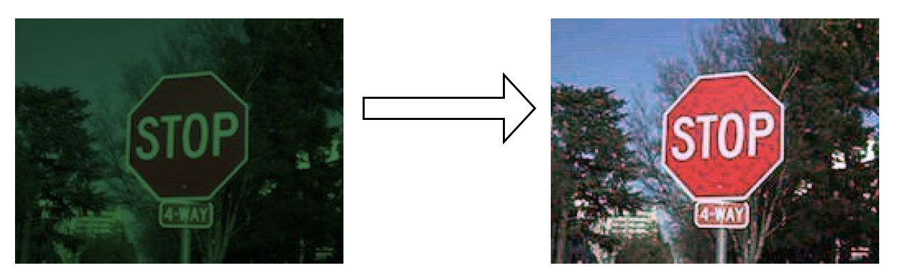
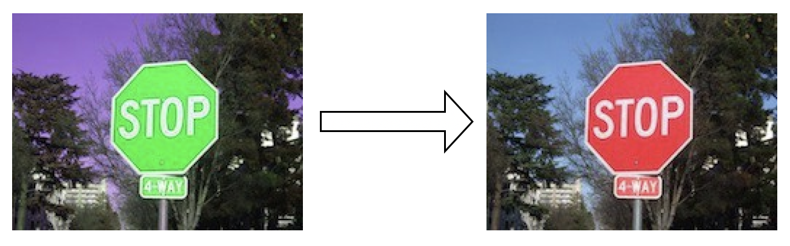

Back to CS 106A Homepage
Section 1
Written by Nick Parlante with modifications by Brahm Capoor
April 7th, 2019
Welcome to section for CS 106A! Each week, your section will meet to review the material from the course and to work through some problems. This week we'll work on image-loop problems, using material from the first few lectures. Problems like this will appear on this week's assignment.
Solution code will be available for all section problems later on, so they will also serve as review problems. Each week's section page will list several problems, and your section leader will pick which problems to do and in what form.
Image Range-Loop Problems
You might find nested y,x range loops
helpful in solving these. Problems like this are well suited to making
a drawing first to think through the algorithm before coding, and
especially to get the arithmetic for each coordinate exactly right.
These algorithms are a magnet for off-by-one errors.
A good first step, as in lecture, is to sketch out the pixel grid
x,y coordinates as in lecture to plan how
your algorithm will access the pixels.

Implement the following functions, each of which takes an image's
filename and returns a SimpleImage.
You might find the
SimpleImage documentation
useful to consult.
-
double_left(filename): Takes the left half of the image, and copies it on top of the right half. -
double_left_up(filename): Takes the left half of the image, and copies it on the right half as before, except it is flipped upside-down as it is copied.
-
copies_2(filename): Create a new image twice as wide as the original, and place two copies of the original image, in it, side by side. -
squeeze_width(filename, n): A funhouse mirror effect governed by theintparametern. Create a new image with the same height as the original, but with a width that isntimes smaller than the original's. Copy the original image such that it is squeezed horizontally.
For example, if
n = 4, the pixels in the output image with anxcoordinate of0would be copies of the input pixels with anxcoordinate of0 * 4 = 0, while pixels in the output image with anxcoordinate of1would be copies of the input pixels with anxcoordinate of1 * 4 = 4, and so on.
Test your solutions here.
Image Puzzles
This is a lab-style problem. You may want to work on this in groups on your laptop and test your programs as you write them.
Photo Editor programs are often used for color correcting digital
images, that is, modifying the color components in images to alter the
relative 'redness', 'greenness' or 'blueness' of the image. In this
problem, we'll give you three exaggerated examples of images that need
color correction-as well as what exactly is wrong with each of
them-and you'll figure out how to alter each pixel in order to correct
the image. For these problems, you should be able to use the plain
'foreach' to solve each of them without needing to work with
x and y coordinates.
Specifically, implement the following functions, each of which takes
in an image filename and returns a
SimpleImage.
You might find the
SimpleImage documentation
useful to consult.
Reproductions of images themselves are not reproduced on printed copies of this handout. You can find the images on the digital version of this handout, linked on the course website.
For the benefit of students who are color-blind or otherwise unable to identify issues with the colors of these images, we list the issues with each of the images below, so you'll be able to implement them anyway. This table is available on the digital version of this handout, linked on the course page.
| Function | Issue with image |
|---|---|
fix_1 |
In each of the original image's pixels, the red component is divided by 8, the green component by 2 and the blue component by 4. |
fix_2 |
In each of the original image's pixels, the red component is swapped with the green component. |
fix_3 |
In each of the original image's pixels, the red component is swapped with the blue component and the green component is divided by 4. |
-
fix1(filename): This function takes in thefilenameof an image wherein across all its pixels, one of the red/green/blue components has been divided by 2, one by 4, and one by 8. Write code to reverse this to fix the image and then return it.The divide/multiply cycle introduces some small glitches in the image which can be ignored.
-
fix2(filename): This function takes in thefilenameof an image wherein across all its pixels, two of the colors have been swapped. Figure out which two colors and write code to fix it.This does not suffer from divide/multiply glitches. Swapping is perfectly reversible!
-
fix3(filename): This function takes in thefilenameof an image wherein across all its pixels, two of the colors have been swapped. In addition, the third color has been divided by 4. Write code to fix all this.
Test your solutions here.